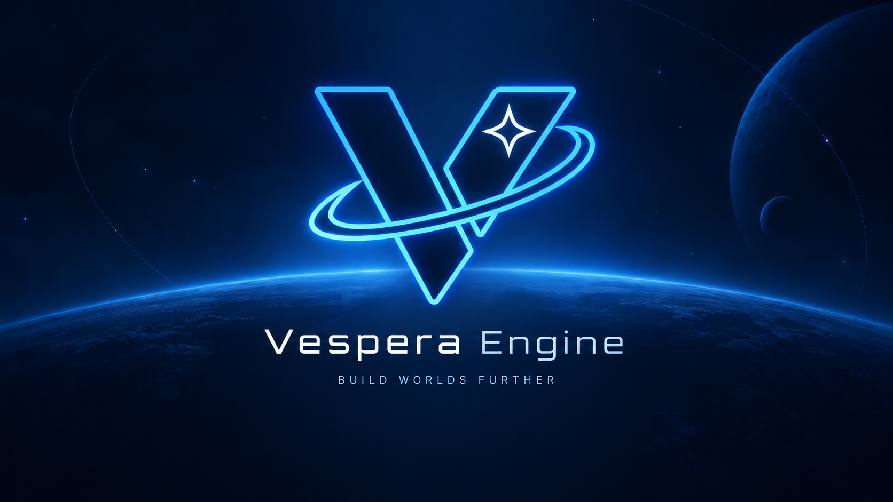

3D / 2.5D projects
Start with a sector-world scene, project-owned C# controller code, collision, input, lighting, sprites, and optional meshes.
Starter templates →Vespera is a native C++20 engine for Windows with a professional editor, C# gameplay scripting, optional Lua, RmlUi, stable asset references, prefabs, scenes, audio, save data, and standalone game builds.
Windows x64 Direct3D 12 C# primary 2D / UI foundation experimental

Start with a sector-world scene, project-owned C# controller code, collision, input, lighting, sprites, and optional meshes.
Starter templates →The experimental 2D starter is a playable screen-space project using RmlUi as its canvas and C# as the game loop.
2D scope →Package Development or Release builds from the editor and ship through the same shared-player path used by Vespera's samples.
Shipping guide →Build Vespera, open the Project Hub, choose a starter, and enter Play Mode.
Getting StartedUse components, C#, optional Lua, RmlUi, prefabs, input actions, assets, and save data.
ScriptingUse Build Game, validate the package, and launch the standalone Release build.
Build & ShipVespera 1.0 focuses on a complete Windows/D3D12 path for small real games instead of claiming unfinished platforms or workflows.